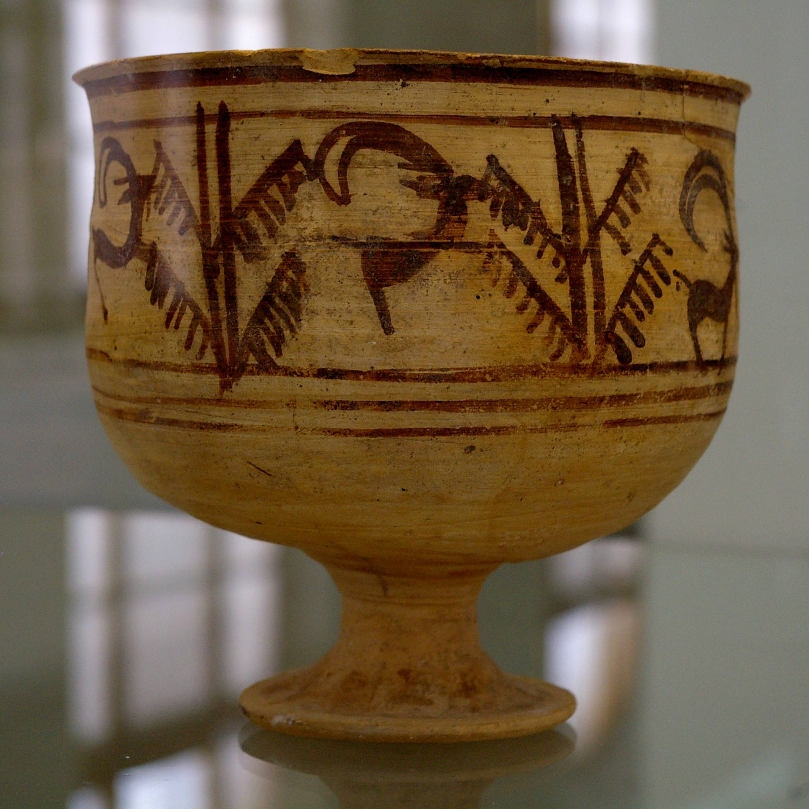
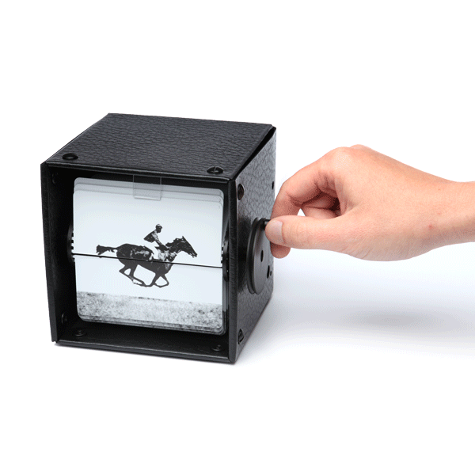

Художники всех времен мечтали о возможности передать в своих произведениях подлинное движение жизни. Стремление человечества запечатлеть в рисунке движение, наблюдаемое в природе и жизни, мы находим в памятниках глубокой древности, когда первобытный художник изображал на камне различных животных и людей или занимался резьбой по дереву и кости. Так в первобытных рисунках северных народностей нашей страны мы видим бегущего оленя, изображенного с большим количеством ног, как бы показывающих стремительность его бега; танцующего охотника с восемью ногами и руками, которыми переданы различные моменты движений в танце. Такие же рисунки мы находим у народов южной Африки, индейцев северной и южной Америки и многих других. Что-то подобное можно увидеть и на древнегреческих вазах. Человек наблюдал жизнь, видел движение в жизни и старался запечатлеть это движение в своих простых рисунках доступными ему средствами.
В Шахри-Сухте (Иран) был найден глиняный сосуд, возраст которого оценивается в 5000 лет. На стенках сосуда сделано 5 изображений козла в движении.
Также были найдены рисунки, в Египте (относят к 2000 году до н.э.). Были заявления о том, что эти рисунки необходимо назвать первыми примерами анимации, однако, это не совсем корректно, так как не было оборудования, способного показать эти рисунки в движении.
В 70-х годах до н.э. римский поэт и философ Лукреций в трактате "О природе вещей" описал приспособление для высвечивания на экране движущихся рисунков. К Х-ХI векам относятся первые упоминания о китайском театре теней - типе зрелища, визуально близком будущему анимационному фильму. В XV веке появились книжки с рисунками, воспроизводившими различные фазы движения человеческой фигуры. Свернутые в рулон, а затем мгновенно разворачивавшиеся, эти книжки создавали иллюзию «оживших» рисунков.
